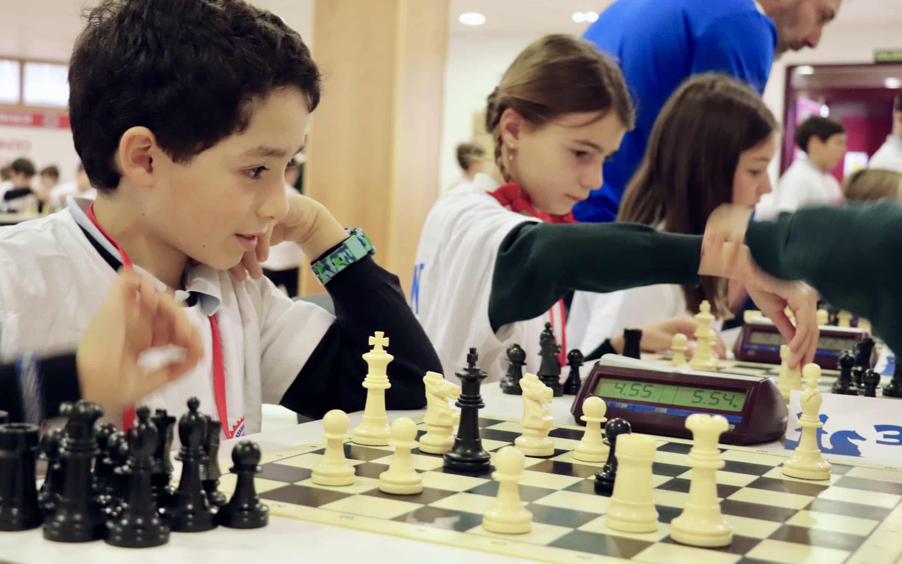

El barri de Sants de Barcelona compta amb un nou club d'escacs que promou l'aprenentatge d'aquest joc mil·lenari i la seva relació amb l'educació i la inclusió social. Aquest club ha estat fundat per un grup d'amics i amigues que s'han unit per la seva passió pels escacs i que volen compartir aquesta passió amb la resta de la ciutat.
Els membres del club es reuneixen regularment per jugar a escacs presencialment en un local que han habilitat per a aquesta activitat, però també juguen online els dies que tenen menys temps. Després de moltes hores de joc i diversió, han decidit muntar un club d'escacs per a tots aquells que vulguin descobrir aquest joc i tot el que comporta.
Així, a més de jugar partides, el club d'escacs de Sants també organitza activitats per a la gent de la ciutat, com ara classes d'escacs com a activitat extraescolar en les escoles o tornejos i competicions per als més aficionats. A més, volen promoure la inclusió social a través dels escacs, fent-ho accessible per a tothom, independentment de la seva edat, gènere o condició física.
Els escacs són una activitat educativa completa, que ajuda a desenvolupar la personalitat dels joves i els prepara per a la vida
Anatoly Karpov
Per als membres del club, els escacs són molt més que un simple joc, són una eina per al desenvolupament personal i social, ja que ajuden a desenvolupar habilitats cognitives, creatives i emocionals, així com també fomenten la cooperació, el respecte i la tolerància.
El club d'escacs de Sants ofereix moltes oportunitats per als amants del joc i per a aquells que vulguin aprendre'n. A continuació, t'expliquem les diferents activitats que ofereixen:
Si vols descobrir tot el que els escacs poden oferir, no dubtis a unir-te al club d'escacs de Sants. T'esperem amb les portes obertes per gaudir d'aquest apassionant joc!